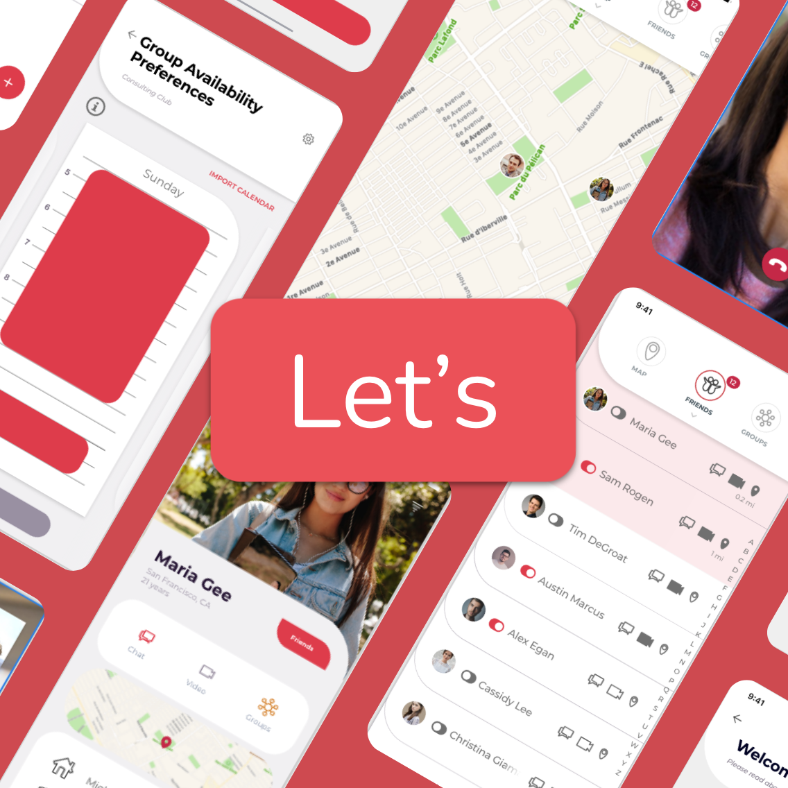

UX Projects
During my time as a Master's student, I have also been able to take courses that build on my qualitative research and design skills.
This page is dedicated to a few of thsoe projects.
Let's
Interaction Design Project
I set out to create the fix for student boredom, but users expressed a restlessness and sense of social isolation, not boredom. So, I sought to create a tool that overcame the barriers to social interaction.